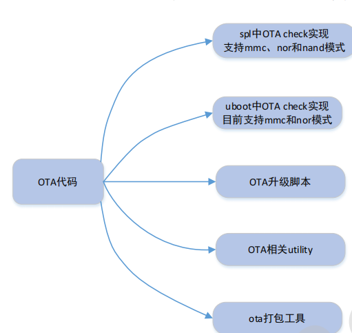
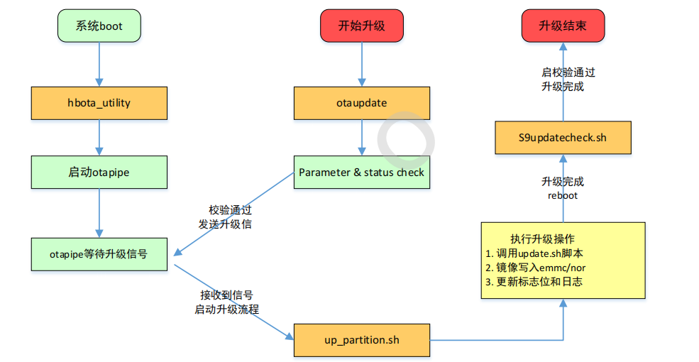
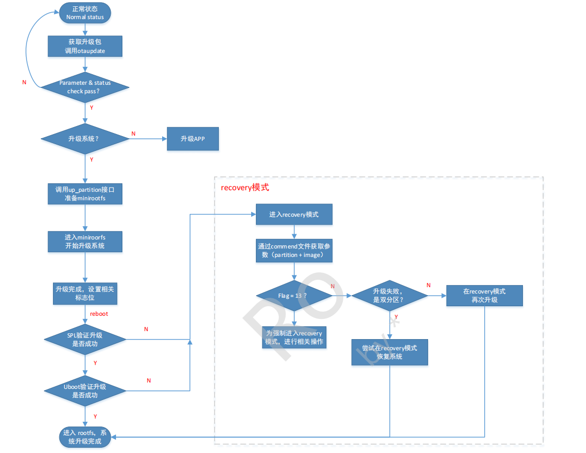
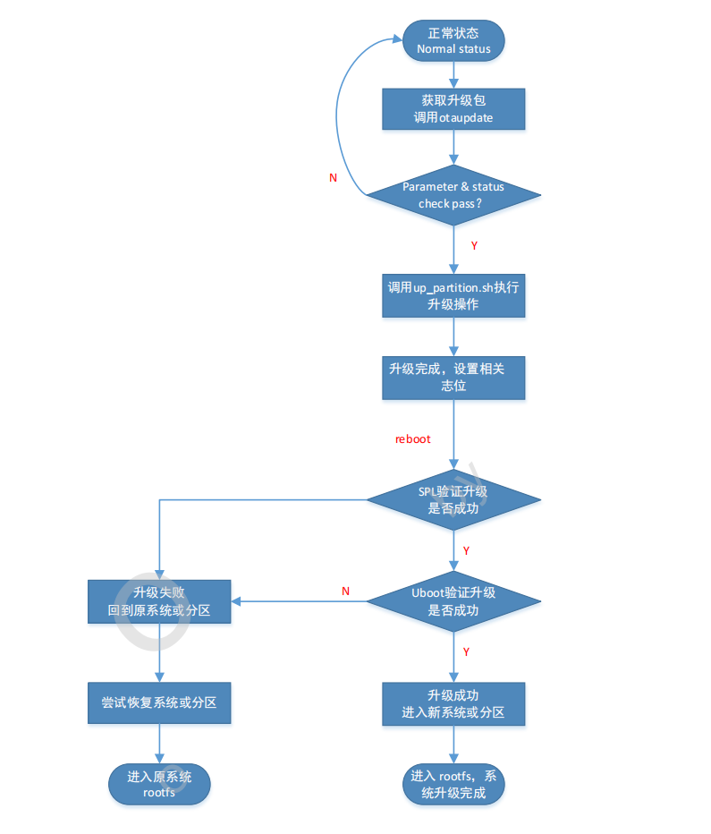

8.5.1. 系统软件OTA实现原理
8.5.1.1. ota系统组成
ota系统主要以下5部分组成

SPL
主要实现OTA升级的校验功能，根据OTA的相关标志位，判断升级是否成功，成功SPL会正常启动uboot分区，失败则启动ubootbak分区，进入recovery模式。AB模式下会启动原系统(升级前使用的uboot分区)
Uboot
实现OTA升级的校验功能和uboot命令下otawrite功能。根据ota的相关标志位，判断升级是否成功，成功uboot会正常启动kernel，失败则会启动recovery分区。AB模式下会启动原系统(升级前使用的kernel和system分区)
ota升级脚本
OTA升级的主体部分，完成OTA升级包的校验，系统状态判断，以及OTA升级的处理等功能。主要包括otaupdate up_partition.sh S9updatecheck.sh
ota相关utility
utility支持对veeprom相关标志位的读写功能，支持对log日志的读功能。
ota打包工具
ota打包工具用于生成ota升级包，升级包中会加入GPT信息、版本信息、warning信息和对应的update.sh升级脚本
8.5.1.2. 系统分区
其中uboot分区做双备份，ubootB用于recovery模式，在ota升级失败的情况下进入recovery模式进行再升级
8.5.1.2.1. 单分区
veeprom |
spl |
bl31 |
ubootA |
ubootB |
kernel |
recovery |
system |
app |
userdata |
veeprom: 存放ota相关标志位，板卡信息
spl: 存放second boot的镜像，对应spl.bin
bl31: 存放bl31的镜像，对应bl31.bin
ubootA(B): uboot分区做双备份，存放normal boot以及recovery boot过程中的third boot镜像，对应uboot.bin
kernel: 存放kernel镜像，包括Image.gz *.dtb
recovery: 存放recovery镜像,包括与kernel相同的的文件以及cpio
system: 存放rootfs相关文件，对应etc ,sbin, usr, bin, lib等文件
app: 存放相关应用程序
userdata: 存放user数据，如OTA升级包，app存放的数据等
8.5.1.2.2. 双分区
veeprom |
spl |
bl31 |
ubootA |
ubootB |
kernelA |
kernelB |
systemA |
systemB |
app |
userdata |
veeprom、spl、bl31、app、userdata同单分区描述， uboot、kernel、system分别做双备份
8.5.1.3. ota标志位
ota升级的标志位保存在veeprom分区，用于再ota升级过程中进行完整性和鲁棒性判断，保证ota升级的顺利进行。
8.5.1.3.1. update_flag
Bit7 |
Bit6 |
Bit5 |
Bit4 |
Bit3 |
Bit2 |
Bit1 |
Bit0 |
reserved |
reserved |
reserved |
reserved |
update_success |
flash_success |
firt_try |
app_success |
update_success: 此标志位用于判断OTA升级是否成功，1:升级成功 0:升级失败
flash_success: 此标志位用于判断升级包镜像写入emmc或者nor中是否成功
first_try: 此标志位用于判断是否为ota升级后的第一次启动
8.5.1.3.2. reset_reson
reset_reason用于记录此次ota升级更新的具体partition name，正常启动或者强制进入recovery模式。
uboot/kernel/system: 表示此次ota升级的是对应的分区
all: 表示ota升级所有的分区
normal: 正常启动
进入recovery模式
8.5.1.3.3. part_status
用于标记当前系统所处的分区状态(即A分区和B分区)
bit7 |
bit6 |
bit5 |
bit4 |
bit3 |
bit2 |
bit1 |
bit0 |
R |
R |
userdata |
app |
system |
kernel |
uboot |
spl |
例如:
升级前: 00000000 在ubootA分区 升级后 00000010 在ubootB分区
8.5.1.4. OTA升级脚本
OTA升级的主要部分，完成OTA升级包校验、系统状态判断、以及OTA升级镜像的写入功能。

8.5.1.4.1. otaupdate
otaupdate是CP侧升级的接口，ota升级会首先在CP侧调用此脚本，该脚本的主要功能有
参数检查: 检查partition和image是否合法
创建日志: 保存ota升级的日志信息
模式检查: 检查系统是否支持recovery模式
剩余空间检查: 查询系统空间使用情况，如果空间不足则停止升级
系统版本认证: 对升级包中的版本信息进行验证
GPT分区认证: 对升级包中的GPT信息进行验证
RSA签名认证: 对升级包中的签名进行验证
warning信息提取: 提取warning信息并输出到日志中
向otapipe发送升级信号: 所有上述验证通过后，otaupdate会向otapipe发送升级信息
8.5.1.4.2. ota_utility
在系统启动的时候，ota_utility会在后台创建otapipe管道，otapipe接收到ota升级信号后主要做两件事:
关闭ota升级前需要退出的程序
调用up_partition.sh进行升级
8.5.1.4.3. ota_partition.sh
此脚本用于实现镜像写入emmc或者nor flash的功能
8.5.1.4.4. s9updatecheck.sh
初始化和ota升级后检查脚本，主要功能如下
初始化veeprom: 在系统启动时，该脚本会检查veeprom是否初始化，如果未初始化则初始化upflag, resetreason和partstatus等标志位
启动otapipe: 在系统启动时，会启动ota_utility，创建管道otapipe,等待接收ota升级信号
检查升级是否成功: 根据标志位检查ota升级是否成功，并写入相关结果到veeprom的标志位和日志文件
恢复功能: 如果升级失败，双分区模式会尝试使用备份分区去恢复原分区，确保系统的鲁棒性
8.5.1.5. recovery实现
kernel分区镜像包括image.gz recovery.gz *.dtb
image.gz: 用于系统正常启动
recovery.gz: recovery系统中image(with cpio),用于升级失败后恢复
*.dtb: 设备树文件
单分区模式下，升级失败后会进入recovery系统，可以再次进行系统升级。或者可以强制进入recovery系统，进行其他操作，比如emmc分区操作
8.5.1.6. OTA升级流程
8.5.1.6.1. 单分区ota升级流程

8.5.1.6.2. 双分区ota升级流程
